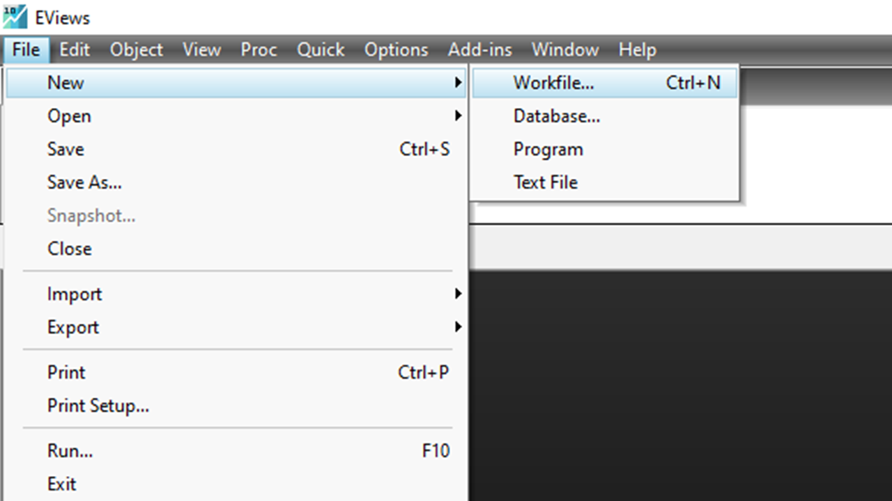
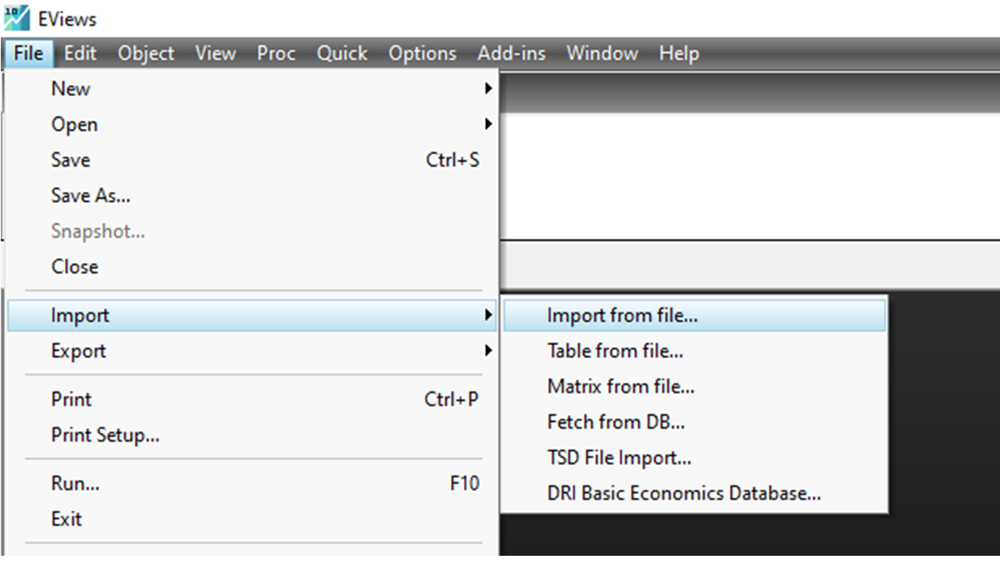
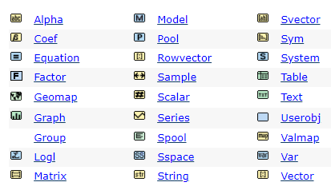

Capitulo 3 Instrucciones de uso de EViews
3.1 Cargar los datos
3.1.1 Crear un archivo de trabajo
- Abre el programa EViews y ve a File>New>Workfile.
- Para datos de sección cruzada selecciona Unstructured/Undated e introduce el tamaño de la muestra en el campo End observation.
- Para datos temporales selecciona la frecuencia e introduce en el campo Start observation la fecha inicial y en End observation la fecha final.
- Confirma OK y guarda el archivo de trabajo en File>Save as.

Figure 3.1: Crear un archivo de trabajo
3.1.2 Abrir un archivo de trabajo ya existente
- En File>Open>Workfile puedes buscar un archivo de trabajo en el disco.
- Los archivos de trabajo de EViews tienen extensión wf1.
3.1.3 Introducir datos a mano
- Crea un archivo de trabajo (ya se realizo en el 3.1.1) y selecciona Quick>Empty Group (Edit Series).
- Sube con el cursor una vez para que se pueda ver la primera fila.
- En la primera fila introduce el nombre de la variable y en la columna debajo los valores.
- Cierra la ventana y a la pregunta Delete Untitled GROUP? contesta Yes.
- En File>Save As puedes guardar el archivo de trabajo con extensión por defecto wf1.
3.1.4 Importar datos de una hoja de cálculo
- Los datos deben estar en una hoja de Excel en columnas con el nombre de las variables en la primera fila.
- Selecciona File>Import>Import from file…
- Busca en el disco duro tu hoja de cálculo, selecciona y confirma Abrir.

Figure 3.2: Importar datos de una hoja de cálculo
3.2 Transformación y creación de variables
3.2.1 Seleccionar objetos en un grupo de trabajo
- En la ventana del archivo de trabajo puedes seleccionar objetos (variables, tablas, gráficos) con el cursor.
- Mantén presionada la tecla Ctrl.
- Con el cursor haz click para seleccionar y deseleccionar objetos.
- Libera la tecla Ctrl y los objetos permanecerán seleccionados.
3.2.2 Borrar una variable
- En el archivo de trabajo selecciona la variable que desees borrar.
- Haz click con el botón derecho del ratón en la variable.
- Selecciona la opción Delete. ¡Atención, variables borradas son irrecuperables!
3.2.3 Renombrar una variable
- En el archivo de trabajo selecciona la variable que desees renombrar.
- En el archivo de trabajo haz click con el botón derecho del ratón en la variable.
- Selecciona la opción Rename…
- En Name to identify object introduce el nuevo nombre y confirma OK.
3.2.4 Editar una variable
- En el archivo de trabajo haz doble click en la variable.
- Haz click en el bot´on Edit +/– y cambia los valores moviéndote con el cursor.
- Cierra la ventana y a la pregunta Delete Untitled GROUP? contesta Yes.
3.2.5 Editar varias variables a la vez
- Selecciona las variables que desees editar (3.2.1).
- Haz click con el botón derecho del ratón y selecciona Open>as Group.
- Haz click en el botón Edit +/– y cambia los valores moviéndote con el cursor.
- Cierra la ventana y a la pregunta Delete Untitled GROUP? contesta Yes.
3.2.6 Crear una variable a partir de variables existentes. Retardos.
- Abre tu fichero de trabajo y ve al menú Quick>Generate series…
- Introduce la fórmula en el campo Enter equation y confirma OK.
- Nota: Una expresión como lprecio=log(precio) crea una nueva variable lprecio que contiene el logaritmo de las observaciones de precio. Otras expresiones comunes son la suma x=y+z, la diferencia x=y-z, el producto **y=x*z, el cociente y=x/z, la potencia y=xˆ2, el logaritmo y=log(x), la exponencial y=exp(z), el operador lógico y=(x<=0) o funciones estadísticas dx=x-@mean(x)**.
- Nota: Si x es una variable, x(-k) es el retardo k-ésimo de la variable.
- Nota: En Help>Function Reference hay una lista de operadores y funciones.
3.2.7 Copiar una o varias variables (u objetos) de un archivo de trabajo a otro
- Abre en el programa los dos archivos de trabajo.
- En la ventana del grupo de origen, señala o selecciona las variables a copiar.
- Selecciona Edit>Copy o presiona Ctrl-C.
- Activa la ventana del grupo de destino haciendo click en ella y selecciona Edit>Paste o presiona Ctrl-V.
- Nota: Si el tamaño de la muestra no es igual, el programa recorta o amplia el tamaño de la serie: si lo recorta sólo se conservan las primeras observaciones; si lo amplia, rellena los huecos con no disponible (NA).
3.2.8 Crear un objeto escalar o número
- Ve a la línea de comando, el espacio en blanco justo debajo de la opción File.
- Escribe la ecuación precedida de la opción scalar, por ejemplo, la instrucción scalar preciomedio=@mean(precio).
- Presiona la tecla Enter.
- Nota: Los objetos escalares no se pueden abrir en ventanas: haz doble click en el escalar para ver su valor en la esquina inferior izquierda de la ventana de EViews.
3.2.9 Vista de objetos
Los objetos que se pueden encontrar en EViews son los siguientes:

Figure 3.3: Objetos en Eviews
3.3 Estadísticos descriptivos
3.3.1 Estadísticos de una o más variables
- Marca las variables (3.2.1) cuyos estadísticos desees calcular.
- En Quick>Group Statistics selecciona Descriptive Statistics>Common sample para obtener estadísticos relativos a cada variable individual como la media, mediana, etc., de cada una de las variables.
- En Quick>Group Statistics selecciona:
- Covariances para la matriz de varianzas y covarianzas.
- Correlations para la matriz de correlaciones.
- Nota: Se puede guardar los resultados congelando la ventana.
3.3.2 Congelar una tabla o gráfico para guardar
- Cuando tengas un resultado, una tabla o un gráfico, presiona el botón Freeze.
- En la nueva ventana que se abre presiona el botón Name, elige un nombre y confirma OK.
3.3.3 Gráficos de una variable
- En Quick>Series Statistics selecciona:
- Histogram and stats para el histograma y los estadísticos básicos.
- Correlogram para obtener un correlograma de la serie en niveles (Level), primeras (1st difference) y segundas diferencias (2nd difference).
- También puedes hacer doble click en la variable y en View seleccionar la opción correspondiente; vuelve a los datos con View > SpreadSheet.
- Para guardar los resultados congela la ventana.
3.3.4 Gráficos de dos variables
- En Quick>Graph… introduce las variables (la primera variable aparecerá en el eje horizontal) y confirma OK.
- Selecciona el tipo de gráfico, como el de puntos Scatter.
- Si lo deseas, presiona el botón Options para realizar cambios en la visualización.
- Confirma OK para ver el gráfico. Para guardarlo haz click en el botón Name.
- Nota: Haciendo doble click en el gráfico abres de nuevo la pantalla de opciones.
3.4 Estimación y contrastes
3.4.1 Estimar por mínimos cuadrados ordinarios (MCO)
- En Quick>Estimate equation escribe la ecuaci´on de manera abreviada, por ejemplo log(y) c x, donde la c indica la ordenada en el origen.
- Confirma OK para ver la ventana con los resultados. Usa el botón Name para guardar la regresión activa. Para guardar definitivamente los resultados puedes congelar la ventana.
- Nota: En el botón View puedes acceder a opciones y contrastes.
- Nota: En c(k) se guarda el valor de la estimación del coeficiente k y lo puedes usar para generar nuevas variables como ygorro=c(1)+c(2)x o escalares como scalar media=c(1)+c(2)@mean(x).
- Nota: En resid se guardan los residuos de la regresión hasta que corras otra regresión. Si quieres guardarlos puedes generar una nueva variable que contenga los residuos, como residuos2=resid.
3.4.2 Contraste de restricciones lineales
- En la ventana de la regresión correspondiente ve a View>Coefficient Tests y elige la opción Wald-Coefficient Restrictions…
- En el campo Coefficient restrictions separated by commas introduce la restricción c(1)=c(2) o restricciones c(1)=2c(2),c(3)=0* y confirma OK.
- Para guardar los resultados congela la ventana.
- Para volver a la regresión selecciona View>Estimation Output.
3.4.3 Contraste de heterocedasticidad de White
- En la ventana de la regresión correspondiente ve a View>Residual Tests y elige la opción White Heteroskedasticity (cross-terms).
- Para guardar los resultados congela la ventana.
- Para volver a la regresión selecciona View>Estimation Output.
3.4.4 Contraste de autocorrelación de Breusch-Godfrey
- En la ventana de la regresión correspondiente ve a View>Residual Tests y elige la opción Serial Correlation LM Test.
- En el campo Lags to include especifica el número de retardos de los residuos que deseas considerar y confirma OK.
- Para guardar los resultados congela la ventana. Para volver a los resultados de la regresión selecciona View>Estimation Output.